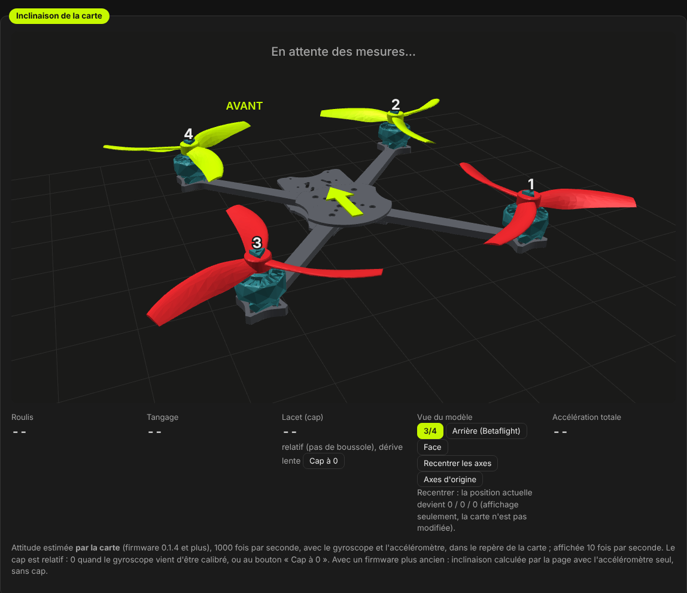
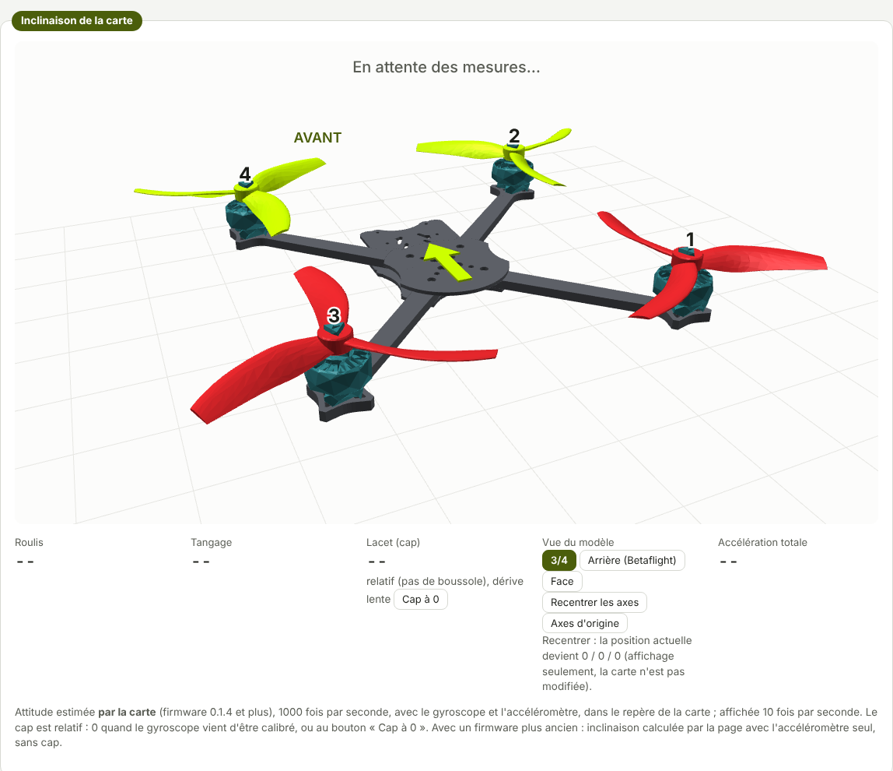
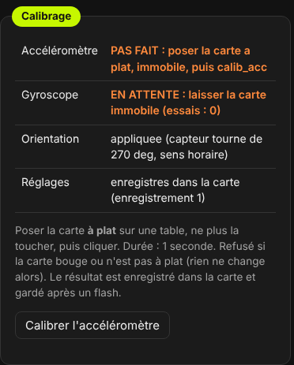
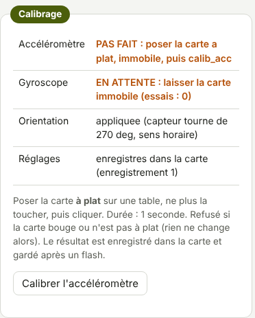

TRUEGLIDE
TRUEGLIDE Onglet Installation
L'onglet Installation montre le drone en 3D, incliné comme la carte de vol. On y vérifie que la carte est bien orientée, puis on calibre l'accéléromètre, drone à plat.
C'est le premier onglet du groupe « Installation du drone ». Le cadre Mise en route du Tableau de bord donne l'ordre à suivre : Installation, Ports, Configuration, Récepteur, Modes, Alimentation et batterie, Moteurs, Failsafe, puis les fonctions TrueGlide.
La vue 3D
Le cadre Inclinaison de la carte dessine le drone : moteurs numérotés de 1 à 4, flèche et mot AVANT sur le nez. Sous la vue : Roulis, Tangage, Lacet (cap), les boutons de la vue et l'Accélération totale.
L'attitude est estimée par la carte (firmware 0.1.4 et suivants), 1000 fois par seconde, avec le gyroscope et l'accéléromètre, dans le repère de la carte. Le logiciel l'affiche 10 fois par seconde. Avec un firmware plus ancien, la page calcule l'inclinaison avec l'accéléromètre seul, sans cap.


Choisir la vue
Trois boutons sous Vue du modèle :
| Bouton | Le drone est vu… |
|---|---|
| 3/4 | de derrière, un peu sur le côté et au-dessus (vue par défaut). |
| Arrière (Betaflight) | de derrière, presque à l'horizontale, comme on le pilote : un roulis à droite fait descendre le côté droit, à droite de l'écran. |
| Face | de face, nez vers l'écran. |
Le navigateur retient la vue choisie. Le même choix existe dans l'onglet Récepteur.


Recentrer les axes
- Recentrer les axes : la position actuelle devient 0 / 0 / 0 (roulis, tangage, cap).
- Axes d'origine : revient aux angles mesurés par la carte.
Ces deux boutons ne changent que l'affichage. La carte n'est pas modifiée. Pour corriger l'horizon en vol, il faut calibrer l'accéléromètre (plus bas).
Le cap et Cap à 0
La carte n'a pas de boussole : le cap est relatif. Il vaut 0 quand le gyroscope vient d'être calibré (au démarrage, carte immobile), ou quand on clique Cap à 0. Il dérive lentement.
Cette dérive vient surtout de la température : le décalage du gyroscope, mesuré à froid au démarrage, change
quand la carte chauffe. Le réglage gyro_cal_tracking (onglet Configuration, ON par défaut) ajuste le
décalage pendant les secondes où la carte est immobile.
Accélération totale
La force mesurée par l'accéléromètre, en g, tous axes réunis. Carte immobile, elle reste près de 1 g, quelle que soit l'inclinaison. Au banc, le 13/10/2026, la carte au repos donnait 1,004 g.
Calibrage
Le cadre Calibrage donne l'état de la carte :
- Accéléromètre : fait ou pas fait ;
- Gyroscope : calibré au démarrage, ou « EN ATTENTE » tant que la carte bouge ;
- Orientation : rotation du capteur sur la carte (270° dans le sens horaire sur la SpeedyBee F405 Mini) ;
- Réglages : enregistrés dans la carte, avec le numéro de l'enregistrement.


- Poser le drone à plat sur une table.
- Ne plus le toucher.
- Cliquer Calibrer l'accéléromètre. La mesure dure 1 seconde.
Si la carte bouge ou n'est pas à plat, le calibrage est refusé et rien ne change. Au banc, carte tenue à la main,
la carte a répondu « REFUSE : la carte a bouge. Rien n'a change. ». Le résultat est enregistré dans la carte et
gardé après un flash, sauf avec l'option « Effacement complet » de l'onglet Flasher. La commande
calib_acc de la ligne de commande fait la même chose.
Vérifier le sens
- Lever le nez du drone : la vue 3D doit lever le nez.
- Pencher le drone à droite : la vue 3D doit pencher à droite.
- Drone à plat, le tourner d'un quart de tour vers la droite : le cap passe à environ +90°, la vue tourne dans le même sens. Le remettre : le cap revient près de 0.
Si la vue part dans un autre sens, l'orientation du gyroscope est fausse : réglage Orientation du
gyroscope (gyro_align) dans l'onglet Configuration. Sur KarRmen, juste après le flash de la 0.3.1,
la vue à plat donnait roulis 0,0° et tangage 0,5°.